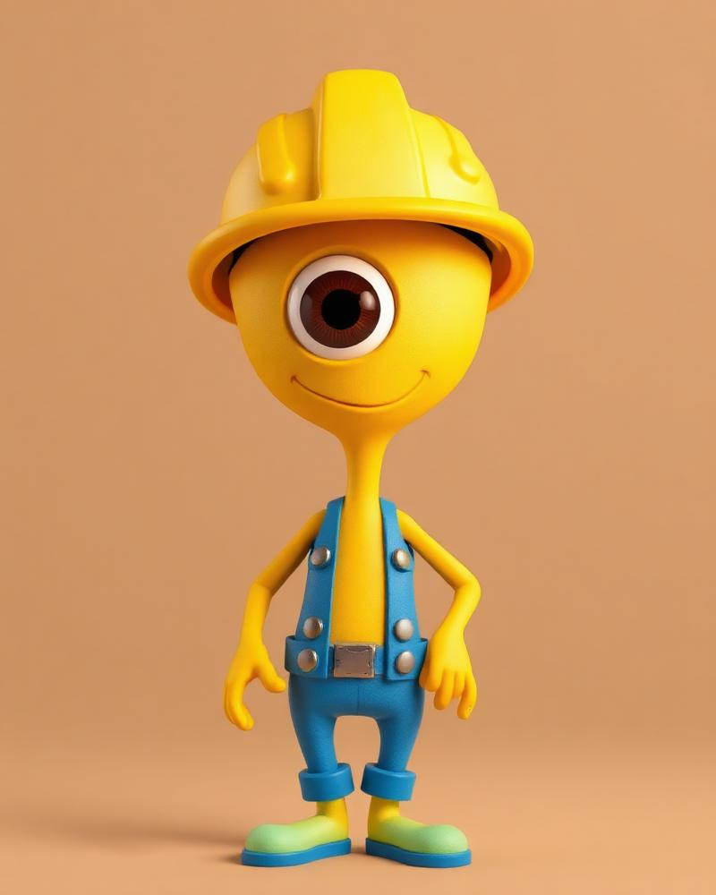
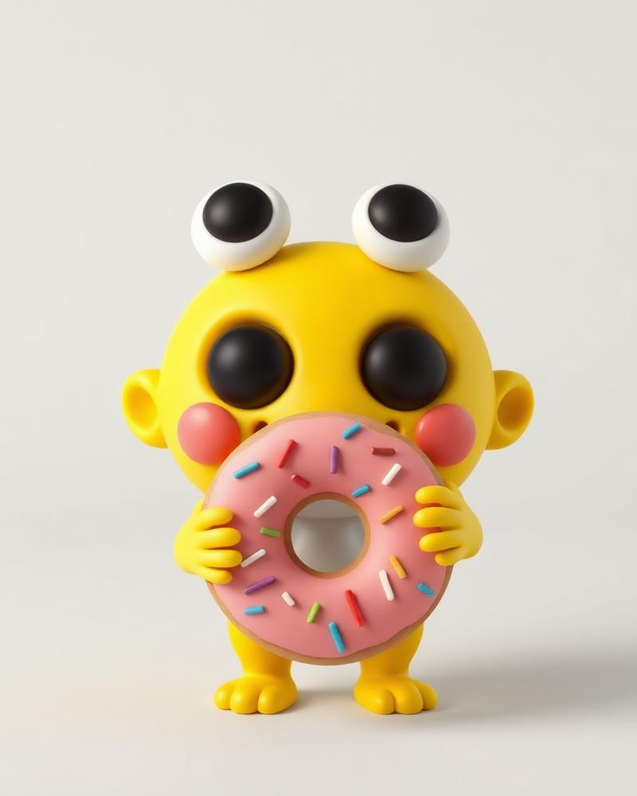
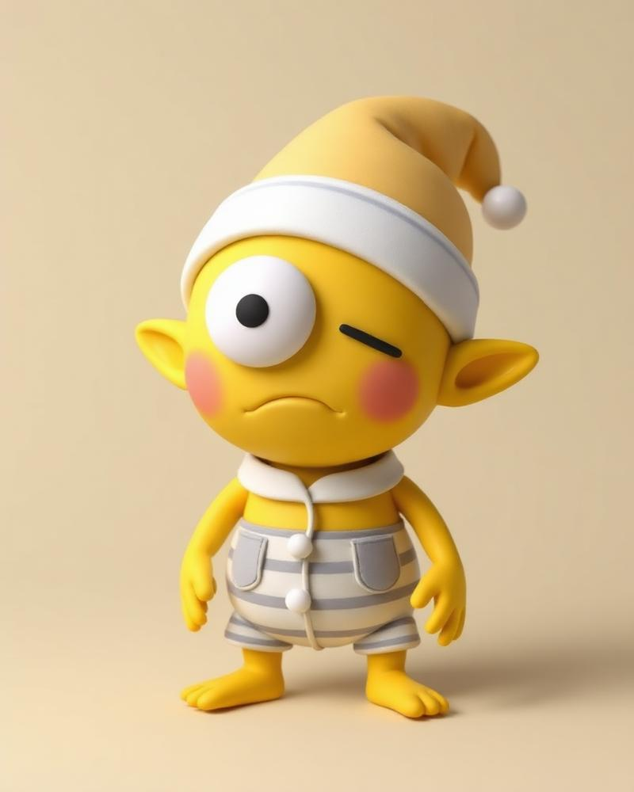

SMALL.
YELLOW.
CLUMSY.
Meet the Gloopies — round little agents of absolute chaos. They live for high-fives, snacks they can't pronounce, and helping you whether you asked for it or not.
12,000+ GloopiesCurrently causing trouble

Meet the Gloopies — round little agents of absolute chaos. They live for high-fives, snacks they can't pronounce, and helping you whether you asked for it or not.
Every Gloopie is biologically engineered to be roughly 30% more helpful than they are destructive.

Specializes in structural engineering and accidentally pressing big red buttons.

Highly motivated by sugar. Can track a donut from up to three miles away.

Technically an intern. Spends 22 hours a day napping in ventilation shafts.